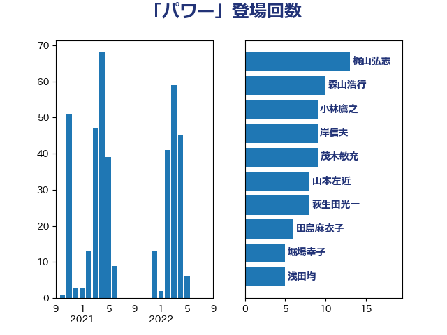

単語「パワー」

| 梶山弘志 | 自由民主党 | 13 回 |
| 森山浩行 | 立憲民主党 | 10 回 |
| 小林鷹之 | 自由民主党 | 9 回 |
| 岸信夫 | 自由民主党 | 9 回 |
| 茂木敏充 | 自由民主党 | 9 回 |
| 山本左近 | 自由民主党 | 8 回 |
| 萩生田光一 | 自由民主党 | 8 回 |
| 田島麻衣子 | 立憲民主党 | 6 回 |
| 堀場幸子 | 日本維新の会 | 5 回 |
| 浅田均 | 日本維新の会 | 5 回 |
| 田村憲久 | 自由民主党 | 5 回 |
| 上田清司 | 国民民主党 | 4 回 |
| 大塚耕平 | 国民民主党 | 4 回 |
| 吉良州司 | 無所属 | 3 回 |
| 太栄志 | 立憲民主党 | 3 回 |
| 小熊慎司 | 立憲民主党 | 3 回 |
| 平林晃 | 公明党 | 3 回 |
| 後藤茂之 | 自由民主党 | 3 回 |
| 林芳正 | 自由民主党 | 3 回 |
| 武見敬三 | 自由民主党 | 3 回 |
| 磯崎仁彦 | 自由民主党 | 3 回 |
| 緒方林太郎 | 無所属 | 3 回 |
| ながえ孝子 | 無所属 | 2 回 |
| 伊波洋一 | 無所属 | 2 回 |
| 加田裕之 | 自由民主党 | 2 回 |
| 吉田宣弘 | 公明党 | 2 回 |
| 宮路拓馬 | 自由民主党 | 2 回 |
| 尾崎正直 | 自由民主党 | 2 回 |
| 岩渕友 | 日本共産党 | 2 回 |
| 岸田文雄 | 自由民主党 | 2 回 |
| 川崎ひでと | 自由民主党 | 2 回 |
| 有村治子 | 自由民主党 | 2 回 |
| 末次精一 | 立憲民主党 | 2 回 |
| 東徹 | 日本維新の会 | 2 回 |
| 河野義博 | 公明党 | 2 回 |
| 浜口誠 | 国民民主党 | 2 回 |
| 浮島智子 | 公明党 | 2 回 |
| 田村まみ | 国民民主党 | 2 回 |
| 石川大我 | 立憲民主党 | 2 回 |
| 足立康史 | 日本維新の会 | 2 回 |
| 阿部知子 | 立憲民主党 | 2 回 |
| 高木かおり | 日本維新の会 | 2 回 |
| 高橋千鶴子 | 日本共産党 | 2 回 |
| 鬼木誠 | 立憲民主党 | 2 回 |
| 一谷勇一郎 | 日本維新の会 | 1 回 |
| 中司宏 | 日本維新の会 | 1 回 |
| 中島克仁 | 立憲民主党 | 1 回 |
| 中西祐介 | 自由民主党 | 1 回 |
| 中谷真一 | 自由民主党 | 1 回 |
| 中野洋昌 | 公明党 | 1 回 |
| 住吉寛紀 | 日本維新の会 | 1 回 |
| 佐々木さやか | 公明党 | 1 回 |
| 加藤鮎子 | 自由民主党 | 1 回 |
| 北側一雄 | 公明党 | 1 回 |
| 古川俊治 | 自由民主党 | 1 回 |
| 古川禎久 | 自由民主党 | 1 回 |
| 古賀之士 | 立憲民主党 | 1 回 |
| 坂本哲志 | 自由民主党 | 1 回 |
| 大石あきこ | れいわ新選組 | 1 回 |
| 大野泰正 | 自由民主党 | 1 回 |
| 宮口治子 | 立憲民主党 | 1 回 |
| 宮本周司 | 自由民主党 | 1 回 |
| 小西洋之 | 立憲民主党 | 1 回 |
| 尾身朝子 | 自由民主党 | 1 回 |
| 山添拓 | 日本共産党 | 1 回 |
| 山田美樹 | 自由民主党 | 1 回 |
| 川合孝典 | 国民民主党 | 1 回 |
| 平井卓也 | 自由民主党 | 1 回 |
| 末松義規 | 立憲民主党 | 1 回 |
| 杉本和巳 | 日本維新の会 | 1 回 |
| 松川るい | 自由民主党 | 1 回 |
| 松野博一 | 自由民主党 | 1 回 |
| 梅村みずほ | 日本維新の会 | 1 回 |
| 榛葉賀津也 | 国民民主党 | 1 回 |
| 横沢高徳 | 立憲民主党 | 1 回 |
| 池畑浩太朗 | 日本維新の会 | 1 回 |
| 沢田良 | 日本維新の会 | 1 回 |
| 河西宏一 | 公明党 | 1 回 |
| 河野太郎 | 自由民主党 | 1 回 |
| 浅野哲 | 国民民主党 | 1 回 |
| 浜田聡 | NHK党 | 1 回 |
| 田村智子 | 日本共産党 | 1 回 |
| 畦元将吾 | 自由民主党 | 1 回 |
| 石川博崇 | 公明党 | 1 回 |
| 石川香織 | 立憲民主党 | 1 回 |
| 石橋通宏 | 立憲民主党 | 1 回 |
| 空本誠喜 | 日本維新の会 | 1 回 |
| 米山隆一 | 立憲民主党 | 1 回 |
| 細田健一 | 自由民主党 | 1 回 |
| 荒井優 | 立憲民主党 | 1 回 |
| 西村智奈美 | 立憲民主党 | 1 回 |
| 西田実仁 | 公明党 | 1 回 |
| 赤羽一嘉 | 公明党 | 1 回 |
| 鈴木敦 | 国民民主党 | 1 回 |
| 長谷川岳 | 自由民主党 | 1 回 |
| 阿達雅志 | 自由民主党 | 1 回 |
| 青木愛 | 立憲民主党 | 1 回 |
| 音喜多駿 | 日本維新の会 | 1 回 |
| 馬場伸幸 | 日本維新の会 | 1 回 |
| 馬場雄基 | 立憲民主党 | 1 回 |
| 高野光二郎 | 自由民主党 | 1 回 |
| 鰐淵洋子 | 公明党 | 1 回 |